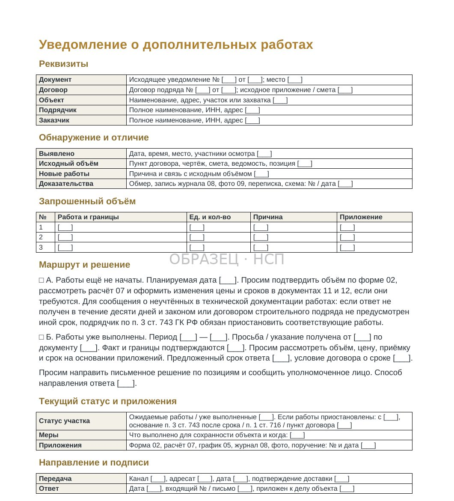
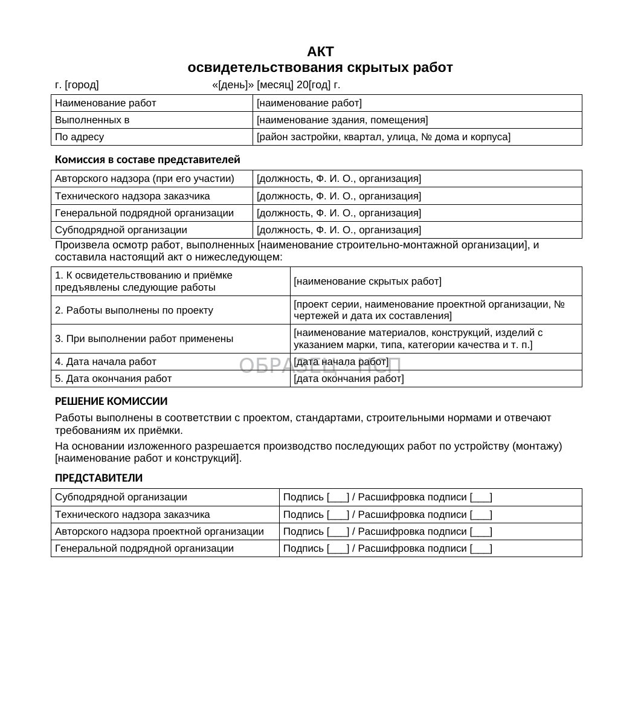
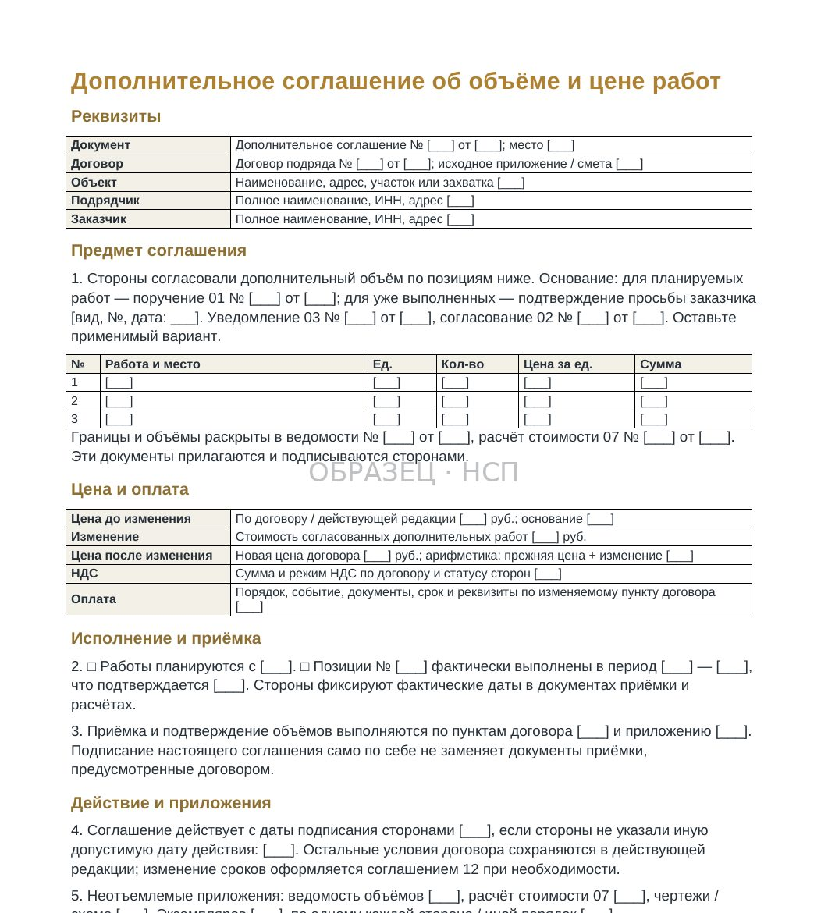
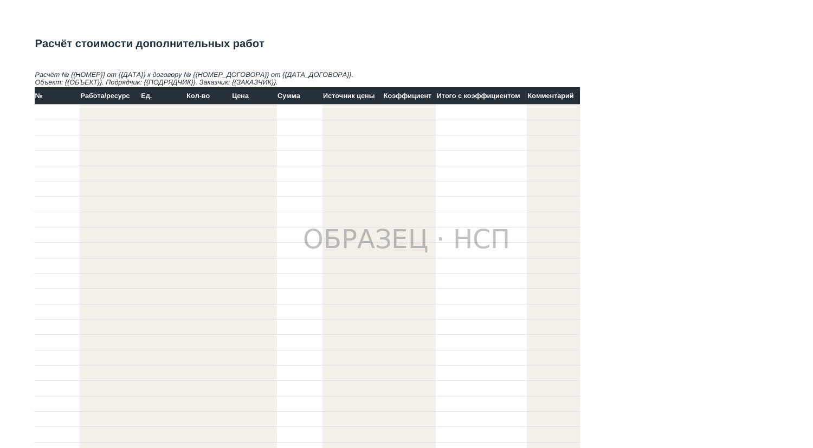

ДОПРАБОТЫ / ПОРЯДОК ОФОРМЛЕНИЯ
Дополнительные работы в строительстве: порядок согласования, оформления и оплаты
Обновлено 10 ноября 2026
Как подрядчику подтвердить необходимость дополнительных работ, согласовать их стоимость и избежать отказа в оплате.
В процессе строительства могут выявиться работы, которые не предусмотрены первоначальной технической документацией. Причиной становятся изменения проектных решений, обнаруженные при вскрытии конструкций обстоятельства или дополнительные требования заказчика.
Часто решение требуется непосредственно на объекте. Представитель заказчика даёт указание продолжать работы, а оформление документов предлагается провести после выполнения. Подрядчик задействует людей, технику и материалы. При закрытии объёмов возникает спор: заказчик не признаёт дополнительный характер работ, их стоимость либо полномочия лица, выдавшего указание.
В таких ситуациях недостаточно подтвердить сам факт выполнения. Необходимо установить основание появления дополнительного объёма, порядок его согласования и обязанность заказчика по оплате.
1. Какие работы считаются дополнительными
Прежде всего необходимо сопоставить спорный объём с действующим договором, технической документацией и сметой.
Для строительного подряда статья 743 ГК РФ предусматривает специальный порядок действий при обнаружении работ, не учтённых в технической документации, выполнение которых требует увеличения сметной стоимости строительства.
Однако не каждое увеличение трудозатрат или фактических объёмов автоматически означает возникновение дополнительных работ, подлежащих отдельной оплате.
На практике необходимо разграничить четыре ситуации.
Работы отсутствуют в технической документации. При выполнении предусмотренного договором объёма выявлена необходимость в новом виде работ, который не был учтён в проекте. Следует установить причины его возникновения и соблюсти порядок уведомления заказчика.
Заказчик изменил техническую документацию. Корректируется проектное решение, спецификация или конструктивный узел. В этом случае, помимо условий договора, учитывается статья 744 ГК РФ.
Увеличился объём существующей сметной позиции. Работа предусмотрена договором, но фактическое количество отличается от планового. Значение имеют условия о цене, способах определения объёмов и допустимости их изменения. Само превышение количества не гарантирует дополнительную оплату.
Требуется устранить недостатки ранее выполненных работ. Если недостатки возникли по причинам, за которые отвечает подрядчик, их исправление, как правило, не относится к дополнительно оплачиваемому объёму.
Результат первоначальной проверки должен быть оформлен письменно. Для каждого спорного объёма следует определить, на каком основании он возник и в чём состоит его отличие от ранее согласованных обязательств.
2. Что проверить в договоре до направления уведомления
Для определения порядка согласования необходимо изучить не только общие положения договора о дополнительных работах.
Предмет договора и границы работ. Следует проверить техническое задание, ведомости объёмов, смету, спецификации, чертежи и действующие редакции проектных решений. Особое внимание требуют формулировки о сопутствующих работах и выполнении полного комплекса до достижения результата. Подробнее об этом условии — в материале «Всё включено в цену»: что проверить подрядчику.
Тип цены. Твёрдая и приблизительная цена предполагают разные последствия изменения объёма и стоимости работ. Применяются положения статьи 709 ГК РФ и специальные нормы о строительном подряде.
Полномочия представителей. Прораб, инженер строительного контроля или технический заказчик могут оперативно давать технические указания, но это не всегда означает наличие полномочий изменять договорную цену. Следует проверить доверенности, условия договора и порядок согласования изменений.
Форма и адрес уведомлений. Необходимо определить, допускает ли договор электронный документооборот, кто принимает юридически значимые сообщения и каким способом подтверждается их вручение.
Порядок изменения стоимости и сроков. В договоре могут быть установлены обязательные формы дополнительных соглашений, требования к расчётам, сметам и условиям пересмотра графика.
Эта проверка позволяет правильно выбрать документальный маршрут до того, как работы будут выполнены и расходы станут необратимыми.
3. Уведомление заказчика о необходимости дополнительных работ
Пункт 3 статьи 743 ГК РФ возлагает на подрядчика обязанность сообщить заказчику об обнаруженных работах, не учтённых в технической документации, если их выполнение влечёт необходимость увеличения сметной стоимости.
В уведомлении целесообразно указать:
- Договор, объект и место обнаружения обстоятельств с привязкой к осям, отметкам или помещениям.
- Содержание и предполагаемую причину возникновения дополнительного объёма.
- Ссылки на проектные решения и сметные позиции, подтверждающие отсутствие работ в первоначальном объёме.
- Предполагаемое количество, техническое решение и необходимость выполнения.
- Расчёт стоимости либо срок его предоставления.
- Влияние дополнительных работ на календарный график.
- Предложение о согласовании дальнейших действий и указание на необходимость письменного ответа.
Уведомление следует направлять уполномоченному адресату предусмотренным договором способом. К нему необходимо приложить материалы, позволяющие оценить техническую необходимость работ.
Если ответ не получен в течение десяти дней, подрядчик по общему правилу пункта 3 статьи 743 ГК РФ обязан приостановить соответствующие работы. Закон или договор строительного подряда могут устанавливать иной срок.
Это не означает автоматической остановки всех работ на объекте. Необходимо определить, какие именно операции зависят от принятия решения по выявленному дополнительному объёму.
Отдельно действует статья 716 ГК РФ: при обнаружении обстоятельств, угрожающих качеству, прочности результата или своевременному завершению работ, подрядчик обязан немедленно предупредить заказчика и приостановить работу до получения указаний в предусмотренном порядке.
Не следует смешивать десятидневный механизм статьи 743 и обязанность незамедлительного предупреждения по статье 716. Основания применения этих норм различаются.

4. Зафиксируйте техническое состояние до выполнения работ
Для подтверждения дополнительных работ требуется не только переписка о согласовании. Необходимо сохранить доказательства объективных обстоятельств, вызвавших изменение объёма.
Например, при вскрытии строительной конструкции могут обнаружиться дефекты основания, не предусмотренные проектом, или ранее выполненные работы другого подрядчика. После демонтажа и последующей заделки установить исходное состояние существенно сложнее.
Документальная фиксация может включать:
- Акт обследования или технической фиксации выявленных обстоятельств.
- Фото- и видеоматериалы с датой, местом и привязкой к конструкциям.
- Записи в общем и специальных журналах работ.
- Схемы, обмеры, исполнительные чертежи и результаты обследований.
- Акт освидетельствования скрытых работ, когда он необходим для соответствующих операций.
- Письменные указания и замечания уполномоченных представителей заказчика.
Акт освидетельствования скрытых работ и акт выявления дополнительного объёма решают разные задачи. Первый подтверждает результаты освидетельствования определённых работ; второй помогает зафиксировать основание и границы обнаруженного дополнительного объёма. Не следует подменять один документ другим. Порядок освидетельствования рассматривается отдельно в статье об акте скрытых работ.
Если представитель заказчика не участвует в осмотре, необходимо сохранить доказательства его надлежащего вызова и отдельно зафиксировать фактические обстоятельства. Оценка таких документов при споре зависит от условий договора и совокупности доказательств.

5. Согласуйте объём, цену и срок до начала выполнения
Надёжное согласование дополнительных работ должно позволять установить, что именно поручено подрядчику и на каких условиях.
Объём. Указываются наименование работ, единицы измерения, количество, границы выполнения, технические требования и документы, по которым объём можно проверить.
Цена. Стороны определяют способ расчёта: применимые договорные расценки, согласованную смету, отдельную калькуляцию или иной предусмотренный договором метод. Итоговая сумма и порядок оплаты должны быть зафиксированы.
Срок. Дополнительные работы могут изменить очередность технологических операций, загрузку бригад и дату завершения этапа. Такое влияние следует оценить и при необходимости оформить изменение графика и договорных сроков.
Приёмка. Необходимо определить, как дополнительные объёмы будут предъявляться заказчику, в каких актах отражаться и на какие документы о согласовании будет сделана ссылка.
Оптимальный вариант — оформить дополнительное соглашение с приложениями: ведомостью объёмов, расчётом стоимости, технической документацией и изменённым графиком при необходимости.
При этом само дополнительное соглашение не заменяет документы фактической сдачи и приёмки работ. После выполнения потребуется подтвердить количество и качество предъявленных объёмов.

6. Как рассчитывать стоимость дополнительных работ
Основой расчёта выступают условия договора и согласованный сторонами способ определения стоимости.
При наличии подходящей договорной расценки следует проверить, соответствует ли она реальным условиям выполнения дополнительных работ. Если изменились технология, стеснённость, последовательность операций или условия доступа, использование прежней расценки без уточнений может привести к неполному учёту затрат.
Если договор предусматривает применение сметно-нормативной базы, необходимо указать применённые нормативы, редакцию базы, индексы и коэффициенты.
При отсутствии подходящих расценок может потребоваться отдельная калькуляция: материалы, трудозатраты, эксплуатация машин и механизмов, доставка, накладные расходы и другие составляющие — в пределах согласованного порядка ценообразования.

Дополнительно оцениваются расходы, непосредственно обусловленные изменением работ: повторная мобилизация техники, дополнительная доставка, простой или изменение последовательности операций. Такие расходы не становятся автоматически подлежащими оплате только потому, что подрядчик их понёс. Необходимо определить правовое основание и порядок согласования или взыскания.
Если договор предусматривает твёрдую цену
По общему правилу статьи 709 ГК РФ подрядчик не вправе односторонне увеличить твёрдую цену за уже согласованный объём.
Но это не означает, что отдельные дополнительные работы при любых обстоятельствах должны выполняться без оплаты. Необходимо отличать изменение затрат на первоначальный объём от появления нового согласованного объёма и учитывать специальные правила строительного подряда.
Если заказчик меняет проект
Статья 744 ГК РФ предусматривает возможность внесения заказчиком изменений в техническую документацию при определённых условиях, включая ограничение стоимости вызываемых ими дополнительных работ десятью процентами общей сметной стоимости строительства и сохранение характера договорных работ.
Правило о десяти процентах не следует трактовать как разрешение выполнять работы без согласования цены и иных условий либо как гарантию их оплаты. Оно регулирует пределы определённых изменений технической документации. Для расчётов необходимо анализировать договор и обстоятельства конкретного изменения.
7. Порядок оформления: последовательность документов
В практической работе целесообразно соблюдать следующую последовательность.
Этап 1. Установить основание. Зафиксировать выявленные обстоятельства, определить отличие от первоначального объёма и проверить актуальную редакцию проекта и сметы.
Этап 2. Направить уведомление. Сообщить заказчику о необходимости дополнительных работ и их предполагаемых последствиях для цены и сроков.
Этап 3. Получить решение. Проверить полномочия лица, согласовавшего дополнительный объём. При отсутствии ответа действовать в соответствии с законом и договором, в том числе по вопросу приостановления соответствующих работ.
Этап 4. Оформить согласование. Подписать предусмотренные договором документы об объёме, цене и сроках. Приложить расчёты, ведомости и необходимые технические материалы.
Этап 5. Выполнить работы с учётом. Вести журналы, фиксировать фактические объёмы, сохранять подтверждающие документы и оформлять скрытые работы до их закрытия.
Этап 6. Предъявить к приёмке и оплате. Подготовить предусмотренные договором акты и расчётные документы, связав каждую позицию с основанием её согласования.
Внутренний приказ подрядчика полезен для организации производства, но не подтверждает сам по себе согласие заказчика на увеличение договорной стоимости.
8. Если дополнительные работы уже выполнены без соглашения
Это наиболее сложный вариант, поскольку часть доказательств обычно приходится восстанавливать после выполнения работ.
Первоначально следует собрать все документы, подтверждающие возникновение и выполнение спорного объёма: проектные изменения, письма, сообщения, протоколы совещаний, журналы, фотофиксацию, накладные, акты и обмеры.
Затем необходимо разделить доказательства по трём вопросам:
- Почему соответствующий объём не относился к первоначальным обязательствам подрядчика?
- Кто, когда и на каком основании потребовал его выполнения либо был уведомлён о необходимости выполнения?
- Как подтверждаются фактическое количество работ, их стоимость и сдача результата?
После этого можно направить заказчику мотивированное письменное обращение с перечнем работ, расчётом, приложениями и предложением рассмотреть их приёмку и оплату.
Оформлять документы задним числом нельзя. Позднее соглашение или акт должны содержать достоверные сведения о фактическом периоде выполнения работ и дате подписания.
Если процедура уведомления по статье 743 ГК РФ не соблюдена, риск отказа во взыскании существенно возрастает. Закон предусматривает исключение для ситуаций, когда подрядчик докажет необходимость немедленных действий в интересах заказчика, в частности для предотвращения гибели или повреждения объекта строительства. Такое основание требует убедительных доказательств и не заменяет общий порядок согласования.
Наличие результата работ на объекте само по себе не устраняет недостатков оформления. Дополнительные риски разобраны в материале «Допработы без соглашения».
9. Особенности государственных и муниципальных контрактов
При исполнении государственных и муниципальных контрактов возможность изменения цены, объёма и иных существенных условий ограничена специальным законодательством, в том числе Федеральным законом № 44-ФЗ.
Даже при наличии технической необходимости дополнительное соглашение может быть недопустимым без предусмотренного законом основания.
Поэтому до начала выполнения нового объёма необходимо установить применимый режим закупки, проверить условия контракта и наличие правового основания для изменения обязательств сторон.
Для контрактов по 223-ФЗ также учитываются положение о закупке, документация и условия договора.
10. Что проверить перед началом дополнительных работ
Перед передачей задания производственному участку руководитель проекта или ответственное лицо подрядчика должны получить ответы на следующие вопросы:
- Подтверждено ли, что спорные работы отсутствуют в первоначальном согласованном объёме либо вызваны изменением проектного решения?
- Зафиксированы ли обстоятельства их возникновения, включая необходимые обмеры и фото?
- Получил ли заказчик письменное уведомление и материалы для принятия решения?
- Подтверждены ли полномочия лица, согласовавшего объём?
- Определены ли стоимость, способ её расчёта, сроки выполнения и порядок оплаты?
- Оформлены ли необходимые соглашения и приложения?
- Предусмотрен ли порядок исполнительного оформления, сдачи и приёмки?
Если существенные условия остаются неопределёнными, подрядчику следует оценить риски начала выполнения работ и применимый порядок приостановления соответствующих операций.
Документы для оформления дополнительных работ
Для решения этих задач в линейке «На стороне подрядчика» предусмотрен комплект «Оформление и оплата дополнительных работ».
В составе P2 — 13 файлов: уведомление, согласование объёма, акт освидетельствования скрытых работ, расчёт стоимости в Excel, журнал дополнительных работ, документы об изменении сроков, дополнительные соглашения и инструкции по их применению.
Стоимость комплекта — 24 900 ₽. Документы предназначены для подготовки и согласования конкретных обстоятельств по договору. Их использование не гарантирует оплату и не заменяет юридическую оценку сложного спора.
Главный вывод
Дополнительные работы следует рассматривать не только как производственный объём, но и как изменение договорных обязательств.
Для последующего получения оплаты подрядчику необходимо связать четыре обстоятельства: основание возникновения работ, надлежащее уведомление заказчика, согласование объёма и стоимости, документальное подтверждение выполнения.
Если такая последовательность соблюдается до начала работ, риск спора об их оплате существенно ниже, чем при попытке оформлять документы после завершения дополнительного объёма.
ПЛАТНЫЙ КОМПЛЕКТ
Комплект «Дополнительные работы: как получить оплату»
Формы помогают зафиксировать поручение, согласовать объём и стоимость, отразить влияние на сроки и собрать документы для предъявления допработ к оплате. Поручение, уведомление, расчёт, журнал, акт и соглашения — 13 файлов.
24 900 ₽
Купить комплект →БЕСПЛАТНО, ЗА EMAIL
Допработы: как зафиксировать поручение до начала
Устное «сделайте, потом оформим» превращается в документ за один шаг — если знать, какой. Чек-лист до начала, схема фиксации поручения, шаблон уведомления и реестр с расчётом: четыре файла бесплатно.
- Чек-лист до начала допработ
- Схема фиксации поручения
- Шаблон уведомления
- Реестр допработ с расчётом